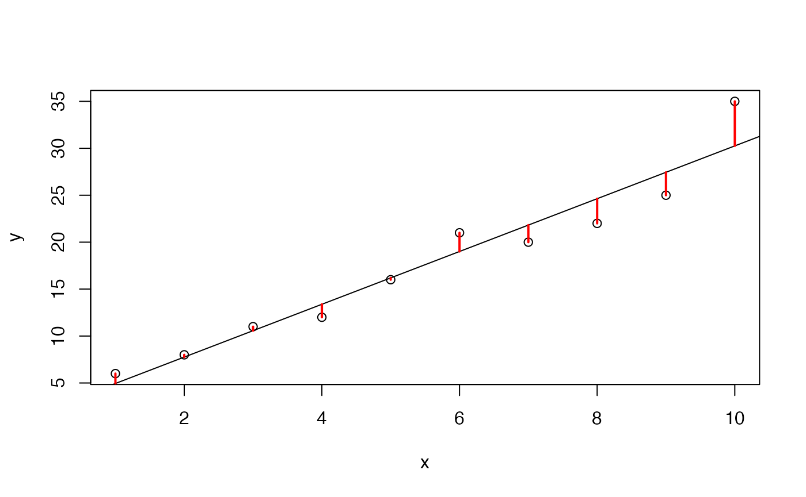

SimpLinR-vignette.Rmd
library(SimpLin)Simple linear regression is the process of taking a set of inputs \(\boldsymbol{x}\) and relating them to a set out outputs \(\boldsymbol{y}\) via a line. Consider the the following data.
# Generating data
x <- 1:10
y <- c(6, 8, 11, 12, 16, 21, 20, 22, 25, 35)
# View data
cbind(x, y)
#> x y
#> [1,] 1 6
#> [2,] 2 8
#> [3,] 3 11
#> [4,] 4 12
#> [5,] 5 16
#> [6,] 6 21
#> [7,] 7 20
#> [8,] 8 22
#> [9,] 9 25
#> [10,] 10 35It is not easy to see the relationship in the table above, other than \(\boldsymbol{y}\) tends to increases as \(\boldsymbol{x}\) increases. Let’s plot the data for better visualization.
plot(x, y)Using SimpLinR(), we can fit a line to this data that
minimizes the sum of squared residuals, plotted in red below.
slr <- SimpLinR(x, y)
plot(x, y)
abline(slr$beta_0_hat, slr$beta_1_hat) # y-intercept and slope
segments(x, y, x, slr$preds, col = "red", lwd = 2)
Of course, the estimates for the y-intercept and slope are just that,
estimates. If we were to collect more data or repeat the study, we would
likely get different estimates. Therefore, we include uncertainty with
our estimates; SimpLinR() provides standard errors and
\(95\%\) confidence intervals.
slr$se_beta_0
#> [1] 1.637872
slr$se_beta_1
#> [1] 0.2639671
slr$ci_beta_0
#> [1] -1.643607 5.910274
slr$ci_beta_1
#> [1] 2.203412 3.420830The confidence intervals indicate that the slope appears positive while, at a 95% confidence level, we would fail to reject the null hypothesis that the y-intercept is greater than zero.
SimpLinR() runs on RccpArmadillo. This
makes the the function faster than other linear regression tools such as
lm(). The C++ code is included below for reference.
#include "RcppArmadillo.h"
// [[Rcpp::depends(RcppArmadillo)]]
using namespace Rcpp;
// [[Rcpp::export]]
List SimpLinCpp(const arma::vec x, const arma::vec y) {
double n = x.n_elem;
arma::vec x_delta = x - arma::mean(x);
arma::vec y_delta = y - arma::mean(y);
double beta_1_hat = arma::dot(x_delta, y_delta) / arma::dot(x_delta, x_delta);
double beta_0_hat = arma::mean(y) - beta_1_hat * arma::mean(x);
arma::vec preds = beta_0_hat + x * beta_1_hat;
arma::vec resids = preds - y;
double se_beta_1 = sqrt(arma::dot(resids, resids) / arma::dot(x_delta, x_delta) / (n - 2));
double se_beta_0 = se_beta_1 * sqrt(arma::dot(x, x) / n);
double t_crit = R::qt(0.975, n - 2, 1, 0);
double beta_1_lower = beta_1_hat - t_crit * se_beta_1;
double beta_1_upper = beta_1_hat + t_crit * se_beta_1;
double beta_0_lower = beta_0_hat - t_crit * se_beta_0;
double beta_0_upper = beta_0_hat + t_crit * se_beta_0;
return List::create(
Rcpp::Named("beta_0_hat") = beta_0_hat,
Rcpp::Named("beta_1_hat") = beta_1_hat,
Rcpp::Named("preds") = preds,
Rcpp::Named("resids") = resids,
Rcpp::Named("se_beta_0") = se_beta_0,
Rcpp::Named("se_beta_1") = se_beta_1,
Named("ci_beta_0") = NumericVector::create(beta_0_lower, beta_0_upper),
Named("ci_beta_1") = NumericVector::create(beta_1_lower, beta_1_upper)
);
}